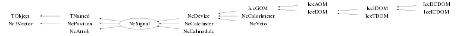

class NcSignal: public TNamed, public NcPosition, public NcAttrib
Class NcSignal Generic handling of (extrapolated) detector signals. The user can decide to store either calibrated or uncalibrated signals. Via the specification of a gain and offset or/and an explicit (de)calibration function both calibrated and uncalibrated signals can always be obtained. For details see the documentation of the memberfunction GetSignal() and the class NcAttrib. The explicit specification of a (de)calibration function offers the maximum flexibility and also allows automatic indication whether calibrated or uncalibrated data has been stored. The latter can be achieved by only specifying a calibration function (and no de-calibration function) in case uncalibrated data is stored, whereas in case of stored calibrated data the user should only provide a de-calibration function (and no calibration function). Note : Signal positions (r) and reference frames (f) are specified via SetPosition(r,f) under the following conventions : f="car" ==> r is Cartesian (x,y,z) f="sph" ==> r is Spherical (r,theta,phi) f="cyl" ==> r is Cylindrical (rho,phi,z) The same holds for SetPositionErrors(). All angles are in radians. Example : NcSignal s; s.SetName("Start counter"); Float_t pos[3]={-1,25,7}; Float_t err[3]={0.03,0.7,0.18}; Float_t signal=120.8; Float_t error=1.73; Float_t offset=-12.78; Float_t gain=250; s.SetPosition(pos,"car"); s.SetPositionErrors(err,"car"); s.SetSignal(signal); s.SetSignalError(error); s.SetOffset(offset); s.SetGain(gain); Float_t loc[3],dr[3],sigma; s.GetPosition(loc,"sph"); s.GetPositionErrors(dr,"sph"); Float_t adc=s.GetSignal(); Float_t sigma=s.GetSignalError(); NcSignal q; // In the example below a signal contains the // following data : timing, ADC and dE/dx q.SetNameTitle("Hybrid","Test for multiple signal data"); q.SetPosition(pos,"car"); q.SetPositionErrors(err,"car"); signal=82.5; // e.g. signal time in ns error=2.01; offset=0.003; q.SetSlotName("TOF",1); q.SetSignal(signal,1); q.SetSignalError(error,1); q.SetOffset(offset,1); signal=268.1; // e.g. ADC value of signal error=3.75; gain=120.78; offset=1.5732; // Addressing via name specification instead of index q.SetSlotName("ADC",2); q.SetSignal(signal,"ADC"); q.SetSignalError(error,"ADC"); q.SetGain(gain,"ADC"); q.SetOffset(offset,"ADC"); signal=23.7; // e.g. corresponding dE/dx value error=0.48; TF1 f=("calib","[0]*pow(x,2)+[1]"); // dE/dx calib. function f.SetParameter(0,3.285); f.SetParameter(1,-18.67); q.SetSlotName("dE/dx",3); q.SetCalFunction(&f,"dE/dx"); q.SetSignal(signal,"dE/dx"); q.SetSignalError(error,"dE/dx"); // Signal retrieval with various (de)calibration modes Float_t tof=q.GetSignal("TOF"); Float_t adc=q.GetSignal("ADC",1); Float_t dedx=q.GetSignal("dE/dx",3); --- Author: Nick van Eijndhoven 23-jan-1999 Utrecht University - Modified: NvE $Date: 2016-09-01 18:50:25 +0200 (Thu, 01 Sep 2016) $ NCFS
Function Members (Methods)
public:
protected:
| virtual void | TObject::DoError(int level, const char* location, const char* fmt, va_list va) const |
| void | TObject::MakeZombie() |
| void | NcAttrib::SetCalFlags(Int_t gf, Int_t of, Int_t j) |
| void | SetSigFlags(Int_t is, Int_t ie, Int_t j) |
Data Members
public:
| enum TObject::EStatusBits { | kCanDelete | |
| kMustCleanup | ||
| kObjInCanvas | ||
| kIsReferenced | ||
| kHasUUID | ||
| kCannotPick | ||
| kNoContextMenu | ||
| kInvalidObject | ||
| }; | ||
| enum TObject::[unnamed] { | kIsOnHeap | |
| kNotDeleted | ||
| kZombie | ||
| kBitMask | ||
| kSingleKey | ||
| kOverwrite | ||
| kWriteDelete | ||
| }; |
protected:
| TArrayI* | NcAttrib::fCalflags | Flags to mark dead, edge, and gain/offset calibrated signals |
| TObjArray* | NcAttrib::fCalfuncs | Explicit signal calibration functions |
| TObjArray* | NcAttrib::fDecalfuncs | Explicit signal de-calibration functions |
| TObject* | fDevice | Pointer to the device that owns this signal |
| Double32_t | Nc3Vector::fDresult | ! Error on scalar result (e.g. norm or dotproduct) |
| TArrayF* | fDsignals | Errors on signal values |
| TArrayF* | NcAttrib::fGains | Gain values |
| NcObjMatrix* | fLinks | Pointers of objects related to the various slots |
| TString | TNamed::fName | object identifier |
| TObjArray* | NcAttrib::fNames | User defined names for the various slots |
| Int_t | Nc3Vector::fNv | The number of components of the array fV |
| TArrayF* | NcAttrib::fOffsets | Offset values |
| Float_t | NcPosition::fScale | The unit scale used for the position coordinates |
| TArrayI* | fSigflags | Flags to mark setting of signal and/or error values |
| TArrayF* | fSignals | Signal values |
| TString | TNamed::fTitle | object title |
| TObjArray* | fTracks | Pointers to associated tracks |
| NcTimestamp* | NcPosition::fTstamp | The timestamp for this position |
| Double32_t* | Nc3Vector::fV | [fNv] Vector in spherical (and errors in Cartesian) coordinates |
| TObjArray* | fWaveforms | The 1D histograms containing the signal waveforms |
Class Charts
{kind=link}
{kind=link}
{kind=link}
{kind=link}

Function documentation
NcSignal()
Creation of an NcSignal object and initialisation of parameters. Several signal values (with errors) can be stored in different slots. If needed, the storage for values (and errors) will be expanded automatically when entering values and/or errors.
void Reset(Int_t mode = 0)
Reset all signal and position values and errors to 0. mode = 0 Reset position and all signal values and their errors to 0. The waveform histograms are reset, but the calibration constants (i.e. gains and offsets) are kept. 1 Reset position and delete the signal and error storage arrays. Also the waveform histograms, gains and offset arrays are deleted. The default when invoking Reset() corresponds to mode=0. Note : In all cases the storage of the various links will be reset. The UniqueID, name and title will NOT be reset. In case the user wants to reset these attributes, this has to be done explicitly via the SET facilities. The usage of mode=0 allows to re-use the allocated memory for new signal (and error) values. This behaviour is preferable (i.e. faster) in case the various signals always contain the same number of values and have the same calibration constants. The usage of mode=1 is slower, but allows a more efficient memory occupation (and smaller output file size) in case the different signals have a variable number of values. For more specific actions see ResetPosition(), ResetSignals(), DeleteSignals(), ResetGain(), ResetOffset(), ResetLink(), ResetWaveform(), DeleteWaveform() and DeleteCalibrations().
void ResetSignals(Int_t mode = 0)
Reset various signal data according to user selection. mode = 0 Reset all signal values, their errors and all waveform histos. 1 Reset only signal values and waveform histos. 2 Reset only signal errors and waveform histos. -1 Reset only signal values. -2 Reset only signal errors. The default when invoking ResetSignals() corresponds to mode=0.
void DeleteSignals(Int_t mode = 0)
Delete storage arrays of various signal data according to user selection. mode = 0 Delete arrays of signal values, their errors and all waveform histos. 1 Delete only signal values array and waveform histos. 2 Delete only signal errors array and waveform histos. -1 Delete only signal values array. -2 Delete only signal errors array. The default when invoking DeleteSignals() corresponds to mode=0.
void SetSignal(Double_t sig, Int_t j = 1)
Store signal value for the j-th (default j=1) slot.
Notes :
1) The first signal slot is at j=1.
2) In case the 'lock' flag was set for the specified slot, the new
signal value will not be stored.
One has to unlock the specified slot first in case one really wants
to overwite the signal value.
In case the value of the index j exceeds the maximum number of reserved
slots for signal values, the number of reserved slots for the
signal values is increased automatically.
void SetSignal(Double_t sig, TString name)
Store signal value for the name-specified slot. Note : In case the 'lock' flag was set for the specified slot, the new signal value will not be stored. One has to unlock the specified slot first in case one really wants to overwite the signal value. This procedure involves a slot-index search based on the specified name at each invokation. This may become slow in case many slots have been defined and/or when this procedure is invoked many times. In such cases it is preferable to use indexed addressing in the user code either directly or via a few invokations of GetSlotIndex().
void AddSignal(Double_t sig, Int_t j = 1)
Add value to the signal of the j-th (default j=1) slot.
Notes :
1) The first signal slot is at j=1.
2) In case the 'lock' flag was set for the specified slot, the new
signal value will not be stored.
One has to unlock the specified slot first in case one really wants
to overwite the signal value.
In case the value of the index j exceeds the maximum number of reserved
slots for signal values, the number of reserved slots for the
signal values is increased automatically.
void AddSignal(Double_t sig, TString name)
Add value to the signal of the name-specified slot. Note : In case the 'lock' flag was set for the specified slot, the new signal value will not be stored. One has to unlock the specified slot first in case one really wants to overwite the signal value. This procedure involves a slot-index search based on the specified name at each invokation. This may become slow in case many slots have been defined and/or when this procedure is invoked many times. In such cases it is preferable to use indexed addressing in the user code either directly or via a few invokations of GetSlotIndex().
Float_t GetSignal(Int_t j = 1, Int_t mode = 0) const
Provide signal value of the j-th (default j=1) slot. Note : The first signal slot is at j=1. In case no signal is present or the input argument "j" or "mode" is invalid, the value 0 is returned. The parameter "mode" allows for automatic (de)calibration of the signal (e.g. gain etc... correction or via explicit (de)calibration functions). mode = 0 : Just the j-th signal is returned. 1 : The j-th signal is corrected for the gain, offset, dead flag etc... In case the j-th slot was marked dead, 0 is returned. In case the gain value was not set, gain=1 will be assumed. In case the gain value was 0, a signal value of 0 is returned. In case the offset value was not set, offset=0 will be assumed. 2 : Same as mode=1 but gain, offset dead flag etc... are taken from the NcDevice which owns this NcSignal object. The corresponding NcDevice slot is obtained via matching of the slotnames. In case this fails, the slotindex "j" of the input argument will be used. In case this NcSignal object has no parent NcDevice, just the j-th signal is returned (like with mode=0). 3 : The j-th signal is corrected using the corresponding calibration function. In case the j-th slot was marked dead, 0 is returned. In case no calibration function is present, just the j-th signal is returned (like with mode=0). 4 : Same as mode=3 but the calibration function and dead flag are taken from the NcDevice which owns this NcSignal object. The corresponding NcDevice slot is obtained via matching of the slotnames. In case this fails, the slotindex "j" of the input argument will be used. 5 : Same as mode=2 but in case no parent NcDevice is present an automatic switch to mode=1 will be made. 6 : Same as mode=4 but in case no parent NcDevice is present an automatic switch to mode=3 will be made. 7 : Same as mode=3 but in case no calibration function is present an automatic switch to mode=4 will be made. 8 : Same as mode=7 but also the corresponding dead flag of the parent device (if any) will be checked. If either the dead flag of the requested signal slot of this NcSignal object or the corresponding parent device slot is set, 0 is returned. <0 : The corresponding de-correction or de-calibration is performed The corrected signal (sigc) is determined as follows : sigc=(signal/gain)-offset The de-corrected signal is determined as follows : signal=(sigc+offset)*gain The default is mode=0.
Float_t GetSignal(TString name, Int_t mode = 0) const
Provide signal value of the name-specified slot. In case no signal is present, 0 is returned. The parameter "mode" allows for automatic (de)calibration of the signal (e.g. gain etc... correction or via explicit (de)calibration functions). For further details about the (de)calibration modes, please refer to the corresponding slot-index based memberfunction. The default is mode=0. This procedure involves a slot-index search based on the specified name at each invokation. This may become slow in case many slots have been defined and/or when this procedure is invoked many times. In such cases it is preferable to use indexed addressing in the user code either directly or via a few invokations of GetSlotIndex().
void SetSignalError(Double_t dsig, Int_t j = 1)
Store error on the signal for the j-th (default j=1) slot.
Notes :
1) The first signal slot is at j=1.
2) In case the 'lock' flag was set for the specified slot, the new
signal error value will not be stored.
One has to unlock the specified slot first in case one really wants
to overwite the signal error value.
In case the value of the index j exceeds the maximum number of reserved
slots for signal error values, the number of reserved slots for the
signal errors is increased automatically.
void SetSignalError(Double_t dsig, TString name)
Store error on the signal for the name-specified slot. Note : In case the 'lock' flag was set for the specified slot, the new signal error value will not be stored. One has to unlock the specified slot first in case one really wants to overwite the signal error value. This procedure involves a slot-index search based on the specified name at each invokation. This may become slow in case many slots have been defined and/or when this procedure is invoked many times. In such cases it is preferable to use indexed addressing in the user code either directly or via a few invokations of GetSlotIndex().
Float_t GetSignalError(Int_t j = 1) const
Provide error on the signal of the j-th (default j=1) slot. Note : The first signal slot is at j=1. In case no signal is present or the argument j is invalid, 0 is returned.
Float_t GetSignalError(TString name) const
Provide error on the signal of the name-specified slot. This procedure involves a slot-index search based on the specified name at each invokation. This may become slow in case many slots have been defined and/or when this procedure is invoked many times. In such cases it is preferable to use indexed addressing in the user code either directly or via a few invokations of GetSlotIndex().
void Data(TString f = "car", TString u = "rad") const
Provide all signal information within the coordinate frame f. The string argument "u" allows to choose between different angular units in case e.g. a spherical frame is selected. u = "rad" : angles provided in radians "deg" : angles provided in degrees The defaults are f="car" and u="rad".
void List(Int_t j = 0) const
Provide signal information for the j-th slot. The first slot is at j=1. In case j=0 (default) the data of all slots will be listed. In case j=-1 the data of all slots will be listed, but the header information will be suppressed.
void List(TString name) const
Provide signal information for the name-specified slot. This procedure involves a slot-index search based on the specified name at each invokation. This may become slow in case many slots have been defined and/or when this procedure is invoked many times. In such cases it is preferable to use indexed addressing in the user code either directly or via a few invokations of GetSlotIndex().
void ListWaveform(Int_t j = 0) const
Provide information for the j-th waveform. The first waveform is at j=1. In case j=0 (default) the info of all waveforms will be listed. In case j=-1 the info of all waveforms will be listed, but the header information will be suppressed.
void ListTrack(Int_t j = 0) const
Provide information for the j-th associated track. The first associated track is at j=1. In case j=0 (default) the info of all associated tracks will be listed. In case j=-1 the info of all tracks will be listed, but the header information will be suppressed.
void SetSigFlags(Int_t is, Int_t ie, Int_t j)
Store signal and/or error value flags of the j-th (default j=1) slot. Note : The first slot is at j=1. In case the value of the index j exceeds the maximum number of reserved slots for the flags, the number of reserved slots for the flags is increased automatically. The value stored is : 10*signalflag + errorflag.
Int_t GetSignalFlag(Int_t j = 1) const
Provide signal value flag of the j-th (default j=1) slot.
flag = 1 : Signal value was set
0 : Signal value was not set
Note : The first attribute slot is at j=1.
In case j is invalid, 0 is returned.
Int_t GetSignalFlag(TString name) const
Provide signal value flag of the name-specified slot.
flag = 1 : Signal value was set
0 : Signal value was not set
This procedure involves a slot-index search based on the specified name
at each invokation. This may become slow in case many slots have been
defined and/or when this procedure is invoked many times.
In such cases it is preferable to use indexed addressing in the user code
either directly or via a few invokations of GetSlotIndex().
Int_t GetErrorFlag(Int_t j = 1) const
Int_t GetErrorFlag(TString name) const
Provide error value flag of the name-specified slot. flag = 1 : Error value was set 0 : Error value was not set This procedure involves a slot-index search based on the specified name at each invokation. This may become slow in case many slots have been defined and/or when this procedure is invoked many times. In such cases it is preferable to use indexed addressing in the user code either directly or via a few invokations of GetSlotIndex().
Int_t GetNwaveforms() const
Provide the number of specified waveforms for this signal. Actually the return value is the highest index of the stored waveforms. This allows an index dependent meaning of waveform info (e.g. waveforms with various gain values). So, when all waveforms are stored in consequetive positions (e.g. 1,2,3), this memberfunction returns 3, being both the highest filled position and the actual number of waveforms. In case only waveforms are stored at positions 1,2,5,7 this memberfunction returns a value 7 whereas only 4 actual waveforms are present. This implies that when looping over the various waveform slots, one always has to check whether the returned pointer value is non-zero (which is a good practice anyhow).
TH1F* GetWaveform(TString name) const
Provide pointer to the waveform histogram with the specified name. Note : In case the specified name matches a part of the full name of the waveform histogram, the pointer to the corresponding histogram is returned. However, the name pattern should match exactly, i.e. it is case sensitive. As such the name matching can be regarded as using wildcards. In case no match is found, zero is returned.
Int_t GetWaveformIndex(TString name) const
Provide index to the waveform histogram with the specified name. Note : In case the specified name matches a part of the full name of the waveform histogram, the index to the corresponding histogram is returned. However, the name pattern should match exactly, i.e. it is case sensitive. As such the name matching can be regarded as using wildcards. In case no match is found, zero is returned.
void SetWaveform(TH1F* waveform, Int_t j = 1)
Set the 1D waveform histogram for the j-th waveform. Notes : The first waveform position at j=1. j=1 is the default value. In case the value of the index j exceeds the maximum number of reserved positions for the waveforms, the number of reserved positions for the waveforms is increased automatically. In case the histo pointer argument has the same value as the current waveform histogram pointer value, no action is taken since the user has already modified the actual histogram. In case the histo pointer argument is zero, the current waveform histogram is deleted and the pointer set to zero. In all other cases the current waveform histogram is deleted and a new copy of the input histogram is created which becomes the current waveform histogram.
void ResetWaveform(Int_t j = 1)
Reset the histogram of the j-th (default j=1) waveform. This memberfunction invokes TH1F::Reset() for the corresponding waveform(s). To actually delete the histograms from memory, use DeleteWaveform(). Notes : The first position is at j=1. j=0 ==> All waveforms will be reset.
void DeleteWaveform(Int_t j = 1)
Delete the histogram of the j-th (default j=1) waveform. Notes : The first position is at j=1. j=0 ==> All waveforms will be deleted.
Int_t GetNlinks(TObject* obj = 0, Int_t j = 0) const
Provide the number of links to the specified object for the j-th slot. If j=0 (default) all slots will be scanned for the specified object. If obj=0 (default) all encountered objects for the specified slot will be counted. So, invokation of the default GetNlinks() will return the total number of all references to all sorts of stored objects.
Int_t GetNlinks(TObject* obj, TString name) const
Provide the number of links to the specified object for the name-spec. slot. If obj=0 all encountered objects for the specified slot will be counted. This procedure involves a slot-index search based on the specified name at each invokation. This may become slow in case many slots have been defined and/or when this procedure is invoked many times. In such cases it is preferable to use indexed addressing in the user code either directly or via a few invokations of GetSlotIndex().
TObject* GetLink(Int_t j = 1, Int_t k = 1) const
Provide pointer of the object linked to the j-th slot at position k.
TObject* GetLink(TString name, Int_t k = 1) const
Provide pointer of the object linked to the name-spec. slot at position k. This procedure involves a slot-index search based on the specified name at each invokation. This may become slow in case many slots have been defined and/or when this procedure is invoked many times. In such cases it is preferable to use indexed addressing in the user code either directly or via a few invokations of GetSlotIndex().
void SetLink(TObject* obj, Int_t j = 1, Int_t k = 1)
Introduce a link (=pointer) to an object for the j-th slot at position k. Only the pointer values are stored for (backward) reference, meaning that the objects of which the pointers are stored are NOT owned by the NcSignal object. Notes : The first slot is at j=1 and the first position is at k=1. j=1 and k=1 are the default values. If needed, the storage area for the links is increased automatically. In case the pointer argument is zero, indeed a value of zero will be stored at the specified position (k) for the specified slot (j). In principle any object derived from TObject can be referred to by this mechanism. However, this "linking back" facility was introduced to enable NcSignal slots to refer directly to the various NcTracks to which the NcSignal object itself is related (see NcTrack::AddSignal). Therefore, in case the input argument "obj" points to an NcTrack (or derived) object, the current signal is automatically related to this NcTrack (or derived) object. Also a global link to this NcTrack (or derived) object will be stored via the AddTrack() facility. IMPORTANT NOTE : In case one just wants to relate the current NcSignal to a certain NcTrack without a specific signal slot association, it is much more efficient (both memory and CPU wise) to use the memberfunction AddTrack() instead. Please also have a look at the docs of the memberfunction ResetLink() to prevent the situation of stored pointers to non-existent object.
void SetLink(TObject* obj, TString name, Int_t k = 1)
Introduce a link (=pointer) to an object for the name-spec. slot at position k. Only the pointer values are stored for (backward) reference, meaning that the objects of which the pointers are stored are NOT owned by the NcSignal object. This procedure involves a slot-index search based on the specified name at each invokation. This may become slow in case many slots have been defined and/or when this procedure is invoked many times. In such cases it is preferable to use indexed addressing in the user code either directly or via a few invokations of GetSlotIndex(). In case the pointer argument is zero, indeed a value of zero will be stored at the specified position (k) for the specified slotname. In principle any object derived from TObject can be referred to by this mechanism. However, this "linking back" facility was introduced to enable NcSignal slots to refer directly to the various NcTracks to which the NcSignal object itself is related (see NcTrack::AddSignal). Therefore, in case the input argument "obj" points to an NcTrack (or derived) object, the current signal is automatically related to this NcTrack (or derived) object. Also a global link to this NcTrack (or derived) object will be stored via the AddTrack() facility. IMPORTANT NOTE : In case one just wants to relate the current NcSignal to a certain NcTrack without a specific signal slot association, it is much more efficient (both memory and CPU wise) to use the memberfunction AddTrack() instead. Please also have a look at the docs of the memberfunction ResetLink() to prevent the situation of stored pointers to non-existent object.
void AddLink(TObject* obj, Int_t j = 1)
Introduce a link (=pointer) to an object for the j-th slot at the first free position. Only the pointer values are stored for (backward) reference, meaning that the objects of which the pointers are stored are NOT owned by the NcSignal object. Notes : The first slot is at j=1 and the first position is at k=1. j=1 is the default value. If needed, the storage area for the links is increased automatically. In case the pointer argument is zero, no link will be added. In principle any object derived from TObject can be referred to by this mechanism. However, this "linking back" facility was introduced to enable NcSignal slots to refer directly to the various NcTracks to which the NcSignal object itself is related (see NcTrack::AddSignal). Therefore, in case the input argument "obj" points to an NcTrack (or derived) object, the current signal is automatically related to this NcTrack (or derived) object. Also a global link to this NcTrack (or derived) object will be stored via the AddTrack() facility. IMPORTANT NOTE : In case one just wants to relate the current NcSignal to a certain NcTrack without a specific signal slot association, it is much more efficient (both memory and CPU wise) to use the memberfunction AddTrack() instead. Please also have a look at the docs of the memberfunction ResetLink() to prevent the situation of stored pointers to non-existent object.
void AddLink(TObject* obj, TString name)
Introduce a link (=pointer) to an object for the name-spec slot at the first free position. Only the pointer values are stored for (backward) reference, meaning that the objects of which the pointers are stored are NOT owned by the NcSignal object. This procedure involves a slot-index search based on the specified name at each invokation. This may become slow in case many slots have been defined and/or when this procedure is invoked many times. In such cases it is preferable to use indexed addressing in the user code either directly or via a few invokations of GetSlotIndex(). In case the pointer argument is zero, indeed a value of zero will be stored at the first free position of the specified slotname. In principle any object derived from TObject can be referred to by this mechanism. However, this "linking back" facility was introduced to enable NcSignal slots to refer directly to the various NcTracks to which the NcSignal object itself is related (see NcTrack::AddSignal). Therefore, in case the input argument "obj" points to an NcTrack (or derived) object, the current signal is automatically related to this NcTrack (or derived) object. Also a global link to this NcTrack (or derived) object will be stored via the AddTrack() facility. IMPORTANT NOTE : In case one just wants to relate the current NcSignal to a certain NcTrack without a specific signal slot association, it is much more efficient (both memory and CPU wise) to use the memberfunction AddTrack() instead. Please also have a look at the docs of the memberfunction ResetLink() to prevent the situation of stored pointers to non-existent object.
void ResetLink(Int_t j = 1, Int_t k = 1)
Reset the link of the j-th slot at position k. Notes : The first slot is at j=1 and the first position is at k=1. j=1 and k=1 are the default values. This memberfunction is intended to reset only 1 specified link location. For extended functionality, please refer to the memberfuction ResetLinks(). In general the user should take care of properly clearing the corresponding pointer here when the referred object is deleted. However, this "linking back" facility was introduced to enable NcSignal slots to refer directly to the various NcTracks to which the NcSignal object itself is related (see NcTrack::AddSignal). As such, the NcTrack destructor already takes care of clearing the corresponding links from the various NcSignal slots for all the NcSignal objects that were related to that NcTrack. So, in case the link introduced via SetLink() is the pointer of an NcTrack object, the user doesn't have to worry about clearing the corresponding NcTrack link from the NcSignal object when the corresponding NcTrack object is deleted.
void ResetLink(TString name, Int_t k = 1)
Reset the link of the name-specified slot at position k. This memberfunction is intended to reset only 1 specified link location. For extended functionality, please refer to the memberfuction ResetLinks(). This procedure involves a slot-index search based on the specified name at each invokation. This may become slow in case many slots have been defined and/or when this procedure is invoked many times. In such cases it is preferable to use indexed addressing in the user code either directly or via a few invokations of GetSlotIndex().
void ResetLinks(TObject* obj, Int_t j = 0, Int_t k = 0)
Reset single or multiple slot link(s) according to user specified selections. IMPORTANT NOTE : This facility only acts on the slot related links. The global track reference list will not be affected. To remove all references to NcTrack (or derived) objects, please use the RemoveTrack() of RemoveTracks() memberfunctions. A link is only reset if the stored reference matches the argument "obj". In case obj=0 no check on the matching of the stored reference is performed and the stored link is always reset in accordance with the other selection criteria. In case the slot argument "j" is specified, only the links from that specified slot will be deleted. In case j=0 (default) no checking on the slot index is performed. In case the position argument "k" is specified, only the links from that specified position will be deleted. In case k=0 (default) no checking on the position index is performed. So, invokation of ResetLinks(obj) will remove all references to the object "obj" from the total NcSignal, whereas ResetLinks(obj,j) will remove all references to the object "obj" only from slot "j". Notes : The first slot is indicated as j=1, whereas the first position is at k=1. Invokation of ResetLinks(0,row,col) is equivalent to invoking the memberfunction ResetLink(row,col). Invoking the latter directly is slightly faster. Invokation of ResetLinks(0) will reset all stored references in this NcSignal. In general the user should take care of properly clearing the corresponding pointer here when the referred object is deleted. However, this "linking back" facility was introduced to enable NcSignal slots to refer directly to the various NcTracks to which the NcSignal object itself is related (see NcTrack::AddSignal). As such, the NcTrack destructor already takes care of clearing the corresponding links from the various NcSignal slots for all the NcSignal objects that were related to that NcTrack. So, in case the link introduced via SetLink() is the pointer of an NcTrack object, the user doesn't have to worry about clearing the corresponding NcTrack link from the NcSignal object when the corresponding NcTrack object is deleted.
void ResetLinks(TObject* obj, TString name, Int_t k = 0)
Reset single or multiple slot link(s) according to user specified selections. IMPORTANT NOTE : This facility only acts on the slot related links. The global track reference list will not be affected. To remove all references to NcTrack (or derived) objects, please use the RemoveTrack() of RemoveTracks() memberfunctions. A link is only reset if the stored reference matches the argument "obj". In case obj=0 no check on the matching of the stored reference is performed and the stored link is always reset in accordance with the other selection criteria. In case the position argument "k" is specified, only the links from that specified position will be deleted. In case k=0 (default) no checking on the position index is performed. This procedure involves a slot-index search based on the specified name at each invokation. This may become slow in case many slots have been defined and/or when this procedure is invoked many times. In such cases it is preferable to use indexed addressing in the user code either directly or via a few invokations of GetSlotIndex(). In general the user should take care of properly clearing the corresponding pointer here when the referred object is deleted. However, this "linking back" facility was introduced to enable NcSignal slots to refer directly to the various NcTracks to which the NcSignal object itself is related (see NcTrack::AddSignal). As such, the NcTrack destructor already takes care of clearing the corresponding links from the various NcSignal slots for all the NcSignal objects that were related to that NcTrack. So, in case the link introduced via SetLink() is the pointer of an NcTrack object, the user doesn't have to worry about clearing the corresponding NcTrack link from the NcSignal object when the corresponding NcTrack object is deleted.
Int_t GetIndices(TObject* obj, TArrayI& js, TArrayI& ks) const
Provide the slot and position indices of all the storage locations of the specified object. The slot (j) and pos. (k) indices are returned in the two separate TArrayI arrays from which the (j,k) pairs can be obtained from the corresponding array indices like (j,k)=(js.At(i),ks.At(i)). The integer return argument represents the number of (j,k) pairs which were encountered for the specified object. If obj=0 no object selection is performed and all (j,k) indices of the stored references for all objects are returned. Notes : As usual the convention is that slot and position numbering starts at 1. This memberfunction always resets the two TArrayI arrays at the start. This memberfunction can only be used to obtain the (j,k) indices of the object as stored via the SetLink() or AddLink() memberfunction. This means that in case the user has entered a TObjArray as object (to increase the dimension of the resulting structure), the (j,k) indices of that TObjArray are obtained and NOT the indices of the actual objects contained in that TObjArray structure.
Int_t GetIndices(TObject* obj, Int_t j, TArrayI& ks) const
Provide the position indices of all the storage locations of the specified object in the j-th slot of this NcSignal. The position indices are returned in the TArrayI array. The integer return argument represents the number of storage locations which were encountered for the specified object in the j-th slot. If obj=0 no object selection is performed and all position indices of the stored references for all objects of the j-th slot are returned. If j=0 all slots will be scanned and all position indices matching the object selection are returned. Note that in this case multiple appearances of the same position index will only be recorded once in the returned TArrayI array. Notes : As usual the convention is that slot and position numbering starts at 1. This memberfunction always resets the TArrayI array at the start. This memberfunction can only be used to obtain the position indices of the object as stored via the SetLink() or AddLink() memberfunction. This means that in case the user has entered a TObjArray as object (to increase the dimension of the resulting structure), the position indices of that TObjArray are obtained and NOT the indices of the actual objects contained in that TObjArray structure.
Int_t GetIndices(TObject* obj, TString name, TArrayI& ks) const
Provide the position indices of all the storage locations of the specified object in the name-specified slot of this NcSignal. The position indices are returned in the TArrayI array. The integer return argument represents the number of storage locations which were encountered for the specified object in the j-th slot. If obj=0 no object selection is performed and all position indices of the stored references for all objects of the j-th slot are returned. This procedure involves a slot-index search based on the specified name at each invokation. This may become slow in case many slots have been defined and/or when this procedure is invoked many times. In such cases it is preferable to use indexed addressing in the user code either directly or via a few invokations of GetSlotIndex().
Int_t GetIndices(TObject* obj, TArrayI& js, Int_t k) const
Provide the slot indices of all the storage locations of the specified object for the k-th position in this NcSignal. The slot indices are returned in the TArrayI array. The integer return argument represents the number of storage locations which were encountered for the specified object in the k-th position. If obj=0 no object selection is performed and all slot indices of the stored references for all objects in the k-th position are returned. If k=0 all positions will be scanned and all slot indices matching the object selection are returned. Note that in this case multiple appearances of the same slot index will only be recorded once in the returned TArrayI array. Notes : As usual the convention is that slot and position numbering starts at 1. This memberfunction always resets the TArrayI array at the start. This memberfunction can only be used to obtain the slot indices of the object as stored via the SetLink() or AddLink() memberfunction. This means that in case the user has entered a TObjArray as object (to increase the dimension of the resulting structure), the slot indices of that TObjArray are obtained and NOT the indices of the actual objects contained in that TObjArray structure.
void SetSwapMode(Int_t swap = 1)
Set swapmode flag for the internal link storage. In case for the stored links the maximum slot number differs considerably from the maximum position number, it might be more efficient (w.r.t. memory usage and/or output file size) to internally store the link reference matrix with the rows and colums swapped. This swapping is only related with the internal storage and as such is completely hidden for the user. At invokation of this memberfunction the default argument is swap=1. Note : The swap mode can only be set as long as no links are stored in the NcSignal (i.e. a new instance of NcSignal or after invokation of the Reset() or ResetLinks() function).
void AddTrack(NcTrack& t, Int_t mode = 1)
Relate an NcTrack object to this signal. Only the pointer values are stored for (backward) reference, meaning that the tracks of which the pointers are stored are NOT owned by the NcSignal object. mode = 0 : Only the reference to the specified track is stored in the current signal, without storing the (backward) reference to this signal into the NcTrack structure. 1 : The (backward) reference to the current signal is also automatically stored into the NcTrack (or derived) object specified in the input argument. The default is mode=1.
void RemoveTrack(NcTrack& t, Int_t mode = 1)
Remove related NcTrack object from this signal. Also all references (if any) to this track in the slot links area are removed. mode = 0 : All references to the specified track are removed from the current signal, without removing the (backward) reference to this signal from the NcTrack structure. 1 : The (backward) reference to the current signal is also automatically removed from the NcTrack (or derived) object specified in the input argument. The default is mode=1.
void RemoveTracks(Int_t mode = 1)
Remove all related NcTrack objects from this signal. Also all references (if any) to the related tracks in the slot links area are removed. mode = 0 : All track references are removed from the current signal, without removing the (backward) references to this signal from the corresponding NcTrack objects. 1 : The (backward) references to the current signal are also automatically removed from the corresponding NcTrack (or derived) objects. The default is mode=1.
Int_t GetNtracks(NcTrack* t = 0) const
Provide the number of related NcTracks. In case an NcTrack pointer is specified as input argument, the number returned will be the number of occurrences (i.e. 0 or 1) for that specified track. By default t=0, which implies that just the number of all associated tracks will be returned.
NcTrack* GetTrack(Int_t j) const
Provide the related NcTrack number j. Note : j=1 denotes the first track.
TObject* Clone(const char* name = "") const
Make a deep copy of the current object and provide the pointer to the copy. This memberfunction enables automatic creation of new objects of the correct type depending on the object type, a feature which may be very useful for containers when adding objects in case the container owns the objects. This feature allows e.g. NcTrack to store either NcSignal objects or objects derived from NcSignal via the AddSignal memberfunction, provided these derived classes also have a proper Clone memberfunction.